- 00000018WIA30E5DD20GYZ
- id_131064563.19
- Sep 2, 2025 4:15:29 PM
Doing the coil datapath diagnostic (RRx)
Disclaimer
Systems using software version 26.0 or later will use either the RRx receive chain or the DPP receive chain. To determine receive chain type, check the Receiver Type field in the Hardware Configure tab of Guided Install. RRx indicates the RRx receive chain, and DPP indicates the DPP receive chain.
Diagnostic description
Diagnostic path
Purpose
The coil datapath diagnostic (CDD) tests the signal paths between the coil connectors and the coil inputs to the RF hub. It also tests portions of the RF hub that are not covered by internal board level or datapath diagnostics. It utilizes the MCRv tool.
There are 2 MCRv tools: one for 1.5T, another for 3.0T systems. The difference between the tools is the controller with oscillators for the different field strengths.
Physically, the MCRv tool is a hardware module that emulates a coil. It must be connected to the coil inputs or to other points along the coil cable path before starting the diagnostic. The MCRv tool generates known test signals and provides known loads that the diagnostic can measure to verify the correct connectivity between the points where the tool is connected and the rest of the system. The MCRv tool is supplied with a variety of cables that allow an FE to attach the tool to various points along the receive path.
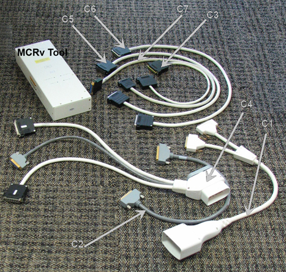
| Cable description | Quantity | Approximate length | Easy label |
|---|---|---|---|
| A port adaptor | 1 | 600 mm (approximately 23.6 inches) | C1 |
| 37 pin sub-D, male-female | 1 | 600 mm (approximately 23.6 inches) | C2 |
| 8w8 male-female | 1 | 600 mm (approximately 23.6 inches) | C3 |
| P port adaptor | 1 | 600 mm (approximately 23.6 inches) | C4 |
| 25 pin sub-D, male-female | 1 | 1000 mm (approximately 39.4 inches) | C5 |
| 16w16, male-female | 2 | 1000 mm (approximately 39.4 inches) | C6 |
| 16w16, male-male | 2 | 1000 mm (approximately 39.4 inches) | C7 |
| Connector type | Location for non-GEM table configuration | Location for GEM table configuration |
|---|---|---|
| A connector | LPCA | LPCA |
| P1 connector | LPCA | LPCA |
| P2 connector | LPCA | In the table |
| P3 connector | In the table | In the table |
| P4 connector | In the table | In the table |
| PA-MUX | - | Under the left side table covers |
| RF switch board (RFSB, RFSBv, RFSB2) | Rear ped | Rear ped |
Non-GEM table configurations
The configuration definitions are:
- 32 / 32 = 32-channel systems with P3 and P4 table ports.
- 32 / 0 = 32-channel systems with no P3 and P4 table ports.
- 16 / 0 = 16-channel systems with no P3 and P4 table ports.
Other configuration possibilities:
- P3, P4 dock interface panel. On early systems, a dock interface panel was located on the magnet's right front foot. This interface has been removed and cable connections are made at the reroute box.
- Reroute box (RRB). Only on systems with the RFSB board.
- There are three types of RF switch boards: RFSB, RFSB2, and RFSBv. Systems with the reroute box will only use the RFSB board. Systems with RFSB2 and RFSBv boards do not use the reroute box. The RFSBv board is only on systems that support A/P1/P2; the RFSBv board cannot support P3 and P4 coil ports.
- MNS upconverter box. If the MNS option is included, there will be an MNS upconverter box placed in the A-connector signal path.
The tests are organized by coil connector type starting with the pathways/connectors that are farthest away (i.e., having the longest signal paths). There are 3 different paths by connector type shown in the columns of the table below. Note that the longest signal paths are at the top of the column. Typically, the user will begin testing by starting with the coil connector.
Requirements
MCRv Tool Kit 1.5T, part number 5182417, 5182417-5, or 5182417-6
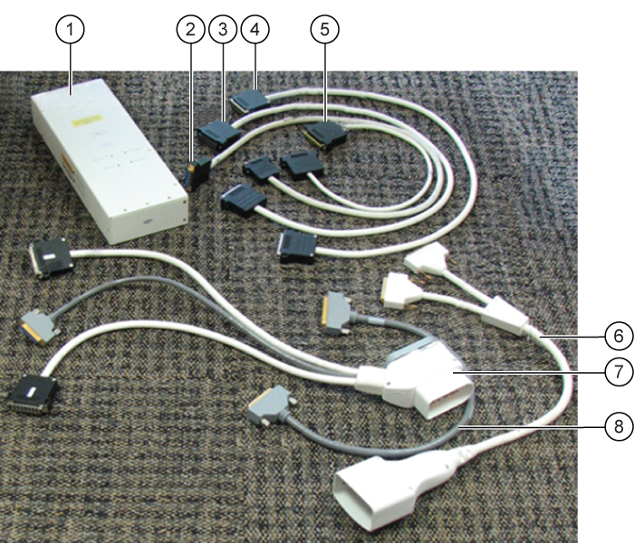
| Callout | Description | Approximate length | Quantity |
|---|---|---|---|
| 1 | MCRv tool | - | 1 |
| 2 | 16w16, male-male | 1000 mm (~39.4”) | 2 |
| 3 | 25-pin sub-D, male-female | 1000 mm (~39.4”) | 1 |
| 4 | 16w16, male-female | 1000 mm (~39.4”) | 2 |
| 5 | 8w8, male-female | 600 mm (~23.6”) | 1 |
| 6 | A-port adaptor | 600 mm (~23.6”) | 1 |
| 7 | P-port adaptor | 600 mm (~23.6”) | 1 |
| 8 | 37-pin sub-D, Male-Fem | 600 mm (~23.6”) | 1 |
Test sequence
- Click on the Service Browser button on the Service Desktop Manager to launch the Common Service Desktop. Select the Diagnostics tab.
- Under the Diagnostics tab, select System Function, RF, and Coil Data Path Diagnostics.
- In the Coil Path to Test list, select a path.
- In the MCRv Tool Connection Point list, choose a connection point.
Figure 3. Coil Datapath Diagnostics main screen 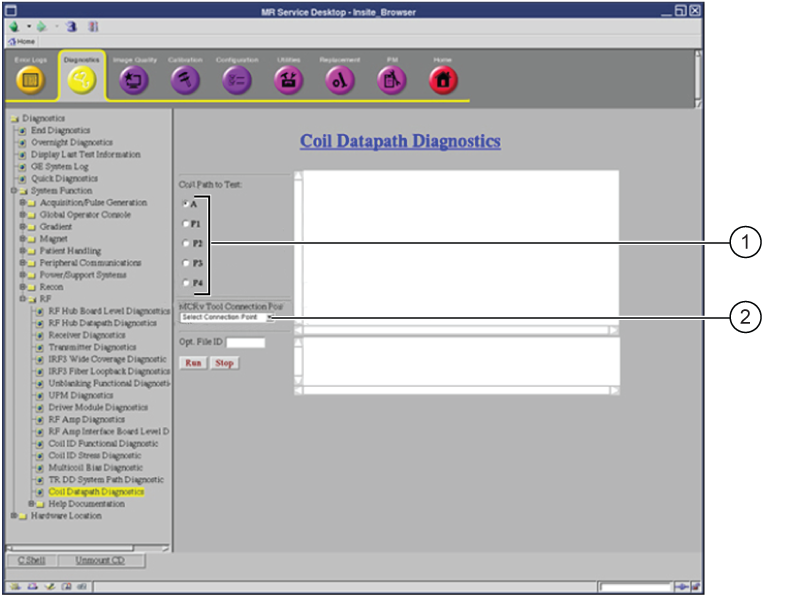
1 Select coil path 2 Select connection point - Physically connect the MCRv tool to the appropriate connection point.
Figure 4. Port locations - non-GEM table 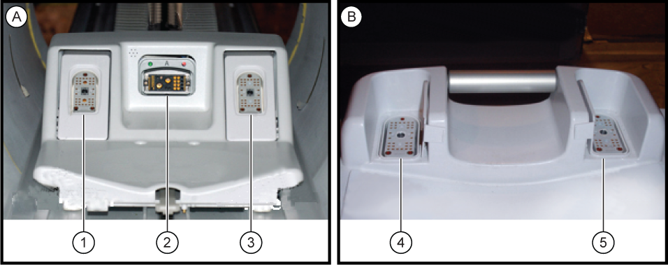
A LPCA B Cradle (patient foot end) 1 P1 connector 2 A connector 3 P2 connector 4 P3 connector 5 P4 connector Note The port location images provides an example of possible port locations. This will vary across patient tables. While both the A port and P port are shown in the image above, the A port is only used on some patient tables.Figure 5. Port locations - GEM table 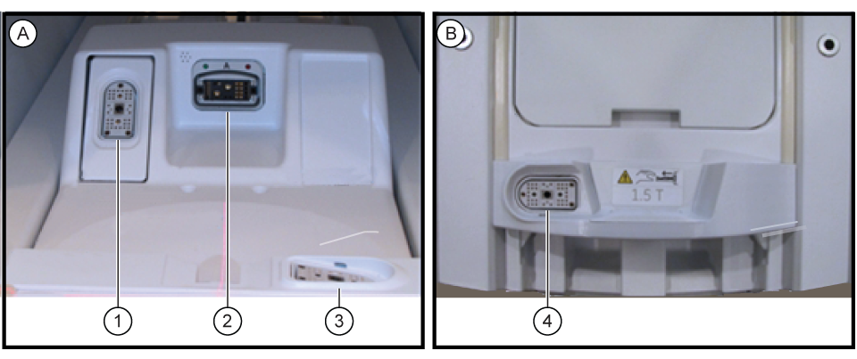
A LPCA B Cradle (patient foot end) 1 P1 connector 2 A connector 3 P2 connector 4 P4 connector - To specify a custom log file name, enter text in the Opt. File ID field.
- Click Run.
Expected results
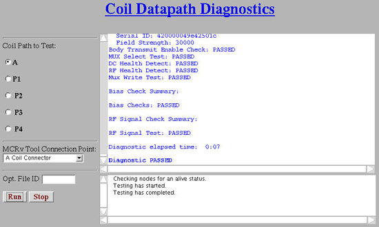
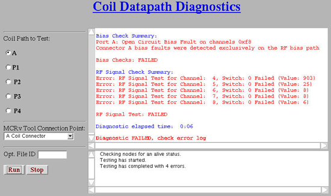
Test setup instructions and troubleshooting
Use the table below for instructions on how to set up each test.
| A | P1 | P2 | P3 (non-GEM table only) | P4 | PA-Mux (GEM table only) |
|---|---|---|---|---|---|
| A coil connector | P coil connector | P coil connector | P coil connector | P coil connector | PA-Mux interface – flat (GEM) table only |
| A cable chain | - | - | P3, P4 table interface - non-GEM tables | (For non-GEM table only) P3, P4 table interface - non-GEM tables | - |
| (For non-GEM table only) An MNS upconverter input | - | - | P3, P4 dock interface - non-GEM tables | (For non-GEM table only) P3, P4 dock interface - non-GEM tables | - |
| (For non-GEM table only) A reroute box | (For non-GEM table only) P1, P2 reroute box | (For non-GEM table only) P1, P2 reroute box | (For non-GEM table only) P3, P4 reroute box | (For non-GEM table only) P3, P4 reroute box | - |
| A port RF switch board | P RF switch board | P RF switch board | P RF switch board | P RF switch board | PA-Mux RF switch board - GEM table only |


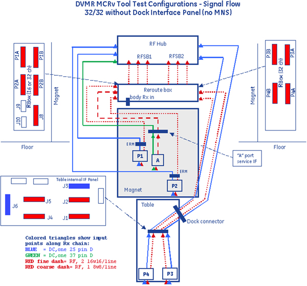

Coil connector
(For non-GEM tables) There are up to five coil connectors. Three coil connectors are accessed through the magnet bore: A, P1, and P2. In addition, a 32-channel system could have connectors P3 and P4 in the table.
(For flat (GEM) tables) There are five coil connectors. Two coil connectors are accessed thorough the LPCA: A and P1. In addition, P2, P4, and PA-Mux are on the table. P2 and P4 are connection sockets on top of the cradle. The PA-Mux multiplexer box is located behind the left side covers of the table.
(For curved tables) There are two coil connectors that are accessed through the LPCA.
Refer to the connection instructions below to run an associated test:
A coil connector
- Attach one end of the C1 (A port adaptor cable) to the A connector.
- Attach other end to connectors J1 and J5 of the MCRv tool.
If the test fails, first check that the connections are firmly seated, ensure the screws are properly tightened, and then rerun the test. If the test fails again, then consider running tests in the A cable chain interface - A Cable Chain Interface.
P coil connector
- Attach one end of the C4 (P port adaptor cable) to the proper P connector.
- Attach other end to connectors J2, J3, and J4 of the MCRv tool. J3 is connected to 16W16 cable labeled RF Channels 1-16 and that J4 is connected to 16W16 cable labeled RF Channels 17-32.
- (For non-GEM table)
- (For P1 or P2) Run tests located in P1, P2 reroute box (P1, P2 reroute box), if installed. Otherwise, run tests located in P RF switch board (P RF switch board).
- (For P3 or P4) Run tests located in P3, P4 table Interface (P3, P4 table interface - non-GEM tables).
- (For GEM table)
- (For P1, P2, or P4) Run tests in RF switch (RFSB2) board (A port RF switch board (RFSB)).
- (For PA-Mux) Run test in PA-Mux interface-flat (GEM) table only (PA-Mux interface – flat (GEM) table only).
P3, P4 table interface - non-GEM tables
This diagnostic tests connectivity from the table interface panel (under the table). It is used only for the P3 and P4 signal paths (32-channel only).

Non-GEM table configuration - P3 table interface
- Attach C5 (25-pin sub-D male-female) to J3 of the table interface panel and to J2 of the MCRv tool. See Coil Datapath Diagnostics diagram 32/32 - non-GEM table and Coil Datapath Diagnostics diagram 32/32 (no MNS) - non-GEM table.
- Attach C6 (16w16 male-female) to J1 of the table interface panel and to J3 of the MCRv tool.
- Attach C6 (16w16 male-female) to J2 of the table interface panel and to J4 of the MCRv tool.
P4 table interface
- Attach C5 (25-pin sub-D male-female) to J6 of the table interface panel and to J2 of the MCRv tool. See Coil Datapath Diagnostics diagram 32/32 - non-GEM table and Coil Datapath Diagnostics diagram 32/32 (no MNS) - non-GEM table.
- Attach C6 (16w16 male-female) to J4 of the table interface panel and to J3 of the MCRv tool.
- Attach C6 (16w16 male-female) to J5 of the table interface panel and to J4 of the MCRv tool.
If a test fails for P3 or P4, first check that the connections are firmly seated, ensure the screws are properly tightened, and then rerun the test. If the test fails again, then consider running tests located in P3, P4 dock interface - non-GEM tables - P3, P4 Dock Interface, if installed. Otherwise, consider running tests located in P3, P4 reroute box - P3, P4 Reroute Box.
P3, P4 dock interface - non-GEM tables
This diagnostic tests connectivity from the dock interface panel at the foot of the magnet. It is used only for the P3 and P4 signal paths (32-channel only). This test requires different connections depending on test of P3 or P4.
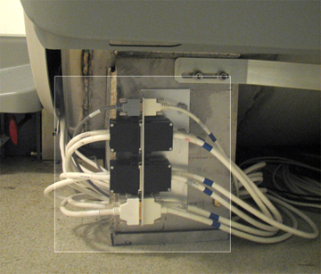
P3 dock interface
- Attach C5 (25-pin sub-D male-female) to J3 of the dock interface panel and to J2 of the MCRv tool. See Coil Datapath Diagnostics diagram 32/32 - non-GEM table.
- Attach C7 (16w16 male-male) to J1 of the dock interface panel and to J3 of the MCRv tool.
- Attach C7 (16w16 male-male) to J2 of the dock interface panel and to J4 of the MCRv tool.
P4 dock interface
- Attach C5 (25-pin sub-D male-female) to J6 of the dock interface panel and to J2 of the MCRv tool.
- Attach C7 (16w16 male-male) to J4 of the dock interface panel and to J3 of the MCRv tool.
- Attach C7 (16w16 male-male) to J5 of the dock interface panel and to J4 of the MCRv tool.
If a test fails for P3 or P4, first check that the connections are firmly seated, ensure the screws are properly tightened, and then rerun the test. If the test fails again, then consider running tests located in P3, P4 reroute box - P3, P4 Reroute Box.
PA-Mux interface – flat (GEM) table only
This diagnostic tests connectivity from the PA-Mux.
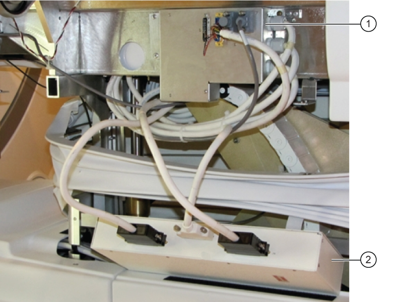
| 1 | PA-MUX (behind left front table cover) |
| 2 | MCRv tool |
- Remove the left side cover of the table (when viewing the table from the foot end) to access the PA-Mux.
- Disconnect J3 from the PA-Mux and connect it to J2 of the MCRv tool.
- Disconnect J1 from the PA-Mux and connect it to J3 of the MCRv tool.
- Disconnect J2 from the PA-Mux and connect it to J4 of the MCRv tool.
A cable chain interface
This diagnostic tests connectivity of the cable chain interface in the magnet bore.
A cable chain
- Attach C2 (37-pin sub-D male-female) to J2 of A cable chain panel (PED-LPCA) and to J1 of MCRv tool.
- Attach C3 (8w8 male-female) to J1 of A cable chain panel (PED-LPCA) and to J5 of MCRv tool.
Alternative tests
If the previous test fails, first check that the connections are firmly seated, make sure the screws are properly tightened, and then rerun the test. If necessary, reseat all test cable connections. If the test continues to fail, consider running tests. If the test fails again, then consider running tests located in:
- An MNS Upconverter (only if MNS is present) - An MNS upconverter
- A reroute box, (if MNS is not present) (only if reroute box is present) - A reroute box
- RF Switch Board (RFSB, RFSBv, or RFSB2) - RF switch board
An MNS upconverter
This diagnostic tests connectivity from the multi-nuclear spectroscopy (MNS) upconverter interface panel at the rear pedestal.
An MNS upconverter input
- Attach C2 (37-pin sub-D male-female) to RF control board (RFCB) J6 in slot 11 and to J1 of MCRv tool.
- Attach C3 (8w8 male-female) to J4 of MNS upconverter I/F and to J5 of MCRv tool.
An MNS upconverter output cable
This diagnostic tests connectivity from the MNS upconverter output cable at the rear pedestal.
- Attach C2 (37-pin sub-D male-female) to RFCB J6 in slot 11 and to J1 of MCRv tool.
- Disconnect the MNS upconverter output cable from J5 of the MNS upconverter.
- Attach C3 (8w8 male-female) to the MNS upconverter output cable and to J5 of MCRv tool.
Reroute box
This diagnostic tests connectivity from the reroute box.
If the reroute box is present, all five coil connectors have connections that are routed to the reroute box. Each test involves a different set of cables and connections as shown below.
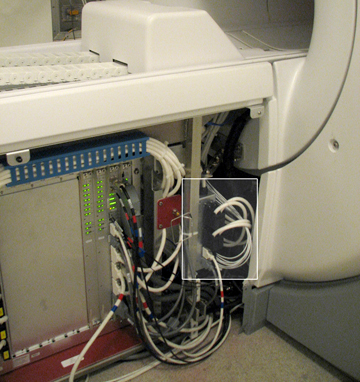
A reroute box
- Attach C2 (37-pin sub-D male-female) to RFCB J6 in slot 11 and to J1 of MCRv tool.
- Attach C3 (8w8 male-female) to J8 A connection of reroute box I/F and to J5 of MCRv tool.
If this test fails, first check that the connections are firmly seated, ensure the screws are properly tightened, and then rerun the test. If the test fails again, then consider running the test located in A port RF switch board - RF Switch Board (RFSB, RFSBv, or RFSB2).
P1, P2 reroute box
This test requires different connections depending on test of P1 or P2. There is also an additional cable connection required if it is a 32-channel system:
P1 reroute box
- Attach C5 (25-pin sub-D male-female) to RFCB J1 in slot 11 and to J2 of the MCRv tool.
- Attach C6 (16w16 male-female) to P1A of the reroute box and to J3 of the MCRv tool.
- Attach C6 (16w16 male-female) to P1B of the reroute box and to J4 of the MCRv tool.
P2 reroute box
- Attach C5 (25-pin sub-D male-female) to RFCB J2 in slot 11 and to J2 of the MCRv tool.
- Attach C6 (16w16 male-female) to P2A of the reroute box and to J3 of the MCRv tool.
- Attach C6 (16w16 male-female) to P2B of the reroute box and to J4 of the MCRv tool.
If the test fails, first check that the connections are firmly seated, ensure the screws are properly tightened, and then rerun the test. If the test fails again, then consider running the test located in P RF switch board - P RF Switch Board.
P3, P4 reroute box
This test requires different connections depending on test of P3 or P4.
P3 reroute box
- Attach C5 (25-pin sub-D male-female) from RFCB J3 in slot 11 and to J2 of the MCRv tool.
- Attach C6 (16w16 male-female) to P3A of the reroute box and to J3 of the MCRv tool.
- Attach C6 (16w16 male-female) to P3B of the reroute box and to J4 of the MCRv tool.
P4 reroute box
- Attach C5 (25-pin sub-D male-female) from RFCB J4 in slot 11 and to J2 of the MCRv tool.
- Attach C6 (16w16 male-female) to P4A of the reroute box and to J3 of the MCRv tool.
- Attach C6 (16w16 male-female) to P4B of the reroute box and to J4 of the MCRv tool.
If the test fails, first check that the connections are firmly seated, ensure the screws are properly tightened, and then rerun the test. If the test fails again, then consider running the test located in P RF switch board - P RF Switch Board.
RF switch board
There are three types of RF switch boards: RFSB, RFSBv, RSFB2. Systems with the reroute box use the RFSB board. Systems without the reroute box use the RFSBv or RSFB2 board. Each port involves a different set of cables and connections as shown below. The troubleshooting below contains instructions for all types of boards.

A port RF switch board
A port RF switch board (RFSB)
- Attach C5 (25-pin sub-D male-female) from RFCB J1 in slot 11 to J2 of the MCRv tool.
- Attach C7 (16w16 male-male) from RF switch board (RFSB) J3 in slot 1 to J3 of the MCRv tool.
A port RF switch board (RFSBv or RFSB2)
- Attach C2 (37-pin sub-D male-female) to RFCB J6 in slot 11 to J1 of the MCRv tool.
- Attach C3 (8w8 male-female) from RFSBv or RFSB2 A1/A2 in slot 1 to J5 of the MCRv tool.
P RF switch board
The P port tests require different connections based upon the user selected channel. This information is supplied by a help dialog box in the diagnostics screen which is shown when the user selects the channel to test. The connection instructions for each of the P ports are shown below.
P1 RF switch board (RFSB)
- Attach C5 (25-pin sub-D male-female) from RFCB J1 in slot 11 to J2 of the MCRv tool.
- Attach C7 to the MCRv tool J3, but the connection to RFSB1 or RFSB2 and the associated connector number is dependent on channel number selected and will be displayed by the help dialog box when the channel number is selected.
P1 RF switch board (RFSBv or RFSB2)
- Attach C5 (25-pin sub-D male-female) to RFCB J1 in slot 11 to J2 of the MCRv tool.
- Attach C7 (16w16 male-male) to P1 of the RFSBv or RFSB2 in slot 1 and to J3 of the MCRv tool.
- Attach C7 (16w16 male-male) to P1 of the RFSBv or RFSB2 in slot 2 and to J4 of the MCRv tool (32-channel only).
P2 RF switch board (RFSB)
- Attach C5 (25-pin sub-D male-female) from RFCB J2 in slot 11 to J2 of the MCRv tool.
- Attach C7 to the MCRv tool J3, but the connection to RFSB1 or RFSB2 and the associated connector number is dependent on channel number selected and will be displayed by the help dialog box when the channel number is selected.
P2 RF switch board (RFSBv or RFSB2)
- Attach C5 (25-pin sub-D male-female) to RFCB J2 in slot 11 to J2 of the MCRv tool.
- Attach C7 (16w16 male-male) to P2 of the RFSBv or RFSB2 in slot 1 and to J3 of the MCRv tool.
- Attach C7 (16w16 male-male) to P2 of the RFSBv or RFSB2 in slot 2 and to J4 of the MCRv tool (32-channel only).
P3 RF switch board (RFSB) - non-GEM table only
- Attach C5 (25-pin sub-D male-female) from RFCB J3 in slot 11 to J2 of the MCRv tool.
- Attach C7 to the MCRv tool J3, but the connection to RFSB1 or RFSB2 and the associated connector number is dependent on channel number selected. This information will be displayed in a dialog box window when the channel number is selected.
P4 RF switchboard (RFSB, RFSBv, RFSB2)
- Attach C5 (25-pin sub-D male-female) from RFCB J4 in slot 11 to J2 of the MCRv tool.
- Attach C7 to MCRv tool J3, but the connection to RFSB, RFSBv, or RFSB2 and the associated connector number is dependent on channel number selected and will be displayed by the help dialog box when the channel number is selected.
PA-Mux RF switch board - GEM table only
- Attach C5 (25-pin sub-D Male-Female) from RFCB J3 in Slot 11 to J2 of the MCRv tool.
- Attach C7 to the MCRv tool J3. The connection to the RFSB2 and the associated connector number is dependent on channel number selected. This information is displayed in a dialog box when the channel number is selected.